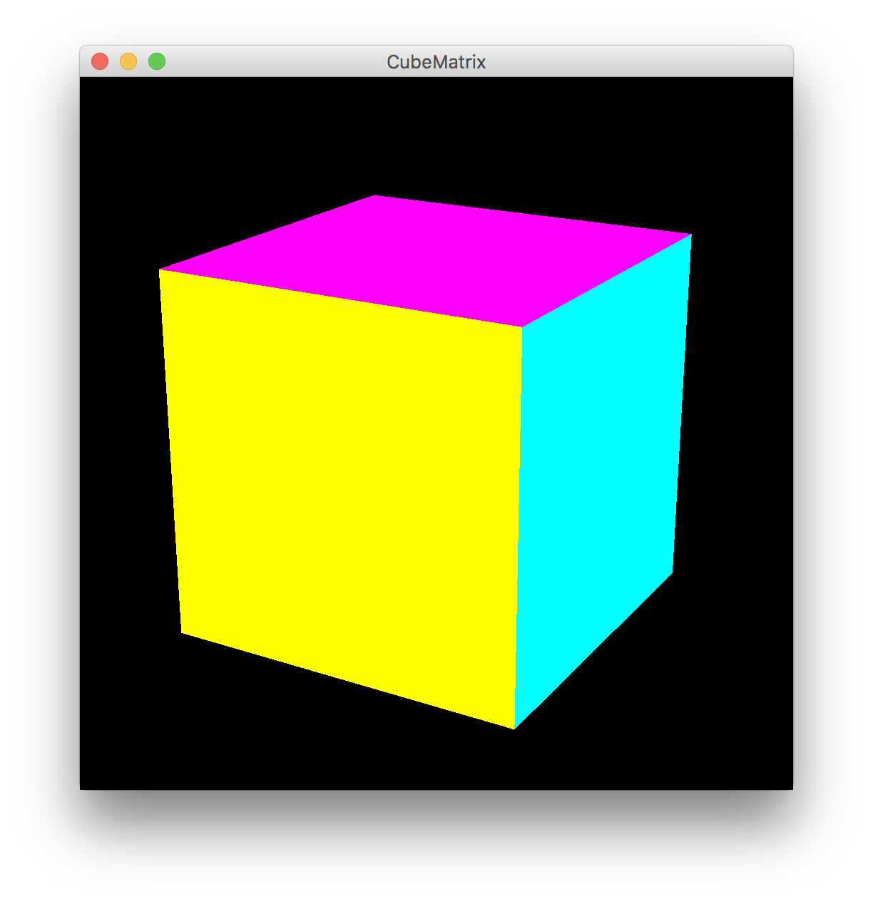
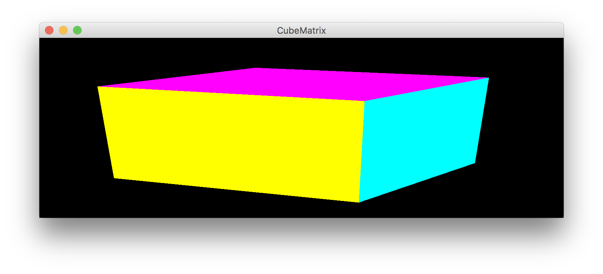
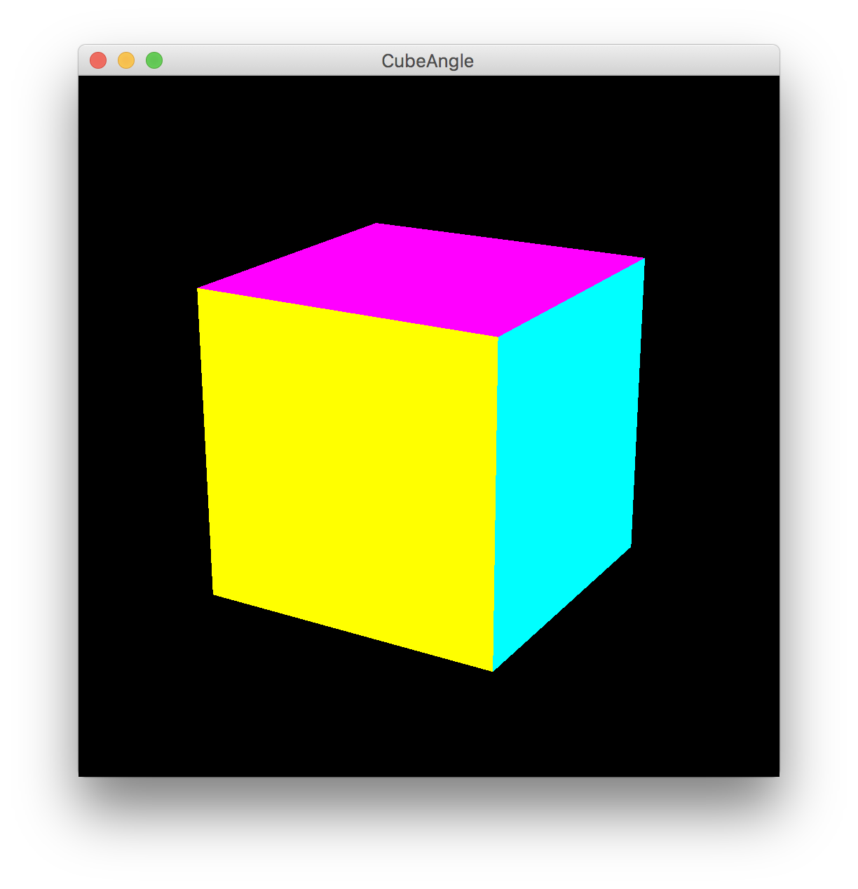
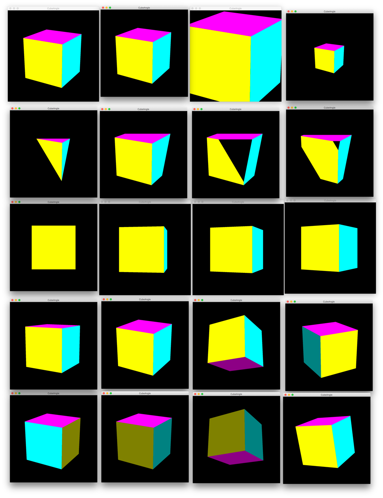

| 氏名 | 越智 秀次 |
|---|---|
| クラス | 理 科 一 類 11 組 |
| 学生証番号 | J4-170235 |
略
ochihidejinoMacBook-Pro:Chap11 ochihideji$ java CubeMatrix

gluPerspective()で設定するアスペクト比をglViewport()で指定したビューポートの縦横比と一致させなければ、ウィンドウサイズの変更に伴って図形自体が歪んでしまう。例えば、 glu.gluPerspective(fieldOfView, 1, near, far)などとすると、初期状態では正しく図形が描かれるが、ウィンドウサイズを横に引き伸ばすと図形も横に引き延ばされる。
略
ochihidejinoMacBook-Pro:Chap11 ochihideji$ java CubeAngle

このプログラムでは引数を与えていくら視点位置を変更したとしても、視心は常に原点にある。
例2に同じ

プログラムをみてわかるように、コマンドの実行時に与える引数の数によって画角、クリッピング面の位置、視点位置のいずれの値を指定するかが変わ る。(CubeAngle.javaの20-30行目より) ここでは変数を3つ与えて視点位置を変更する。実行結果は写真の3段目以下で、与えた引数は教科書P89 図11.4に同じである。
例2に同じ
ochihidejinoMacBook-Pro:Chap11 ochihideji$ java CubeAngle <引数> (引数については実行結果参照)
引数を1つ与えて画角を、2つ与えてクリッピング面の位置を指定する。画角について、一般に人の目の視野角に比して著しく大きい視野角で透視投影を行うと(広角レンズを用いると)、画面の端の部分が大きく歪んで見える。
3時間程度
透視投影に関する内容は図形科学Aで扱ったが、忘れている部分が多かったので復習し直した。
JOGLに入ってから自主課題に取り組めていないので、ウェブなどで調べてJOGLについての理解を深められるような自主課題に取り組んで行きたいと思います。